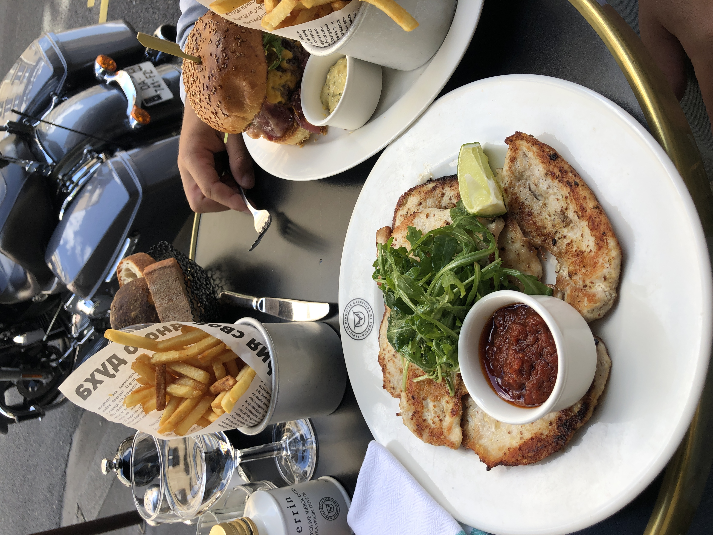
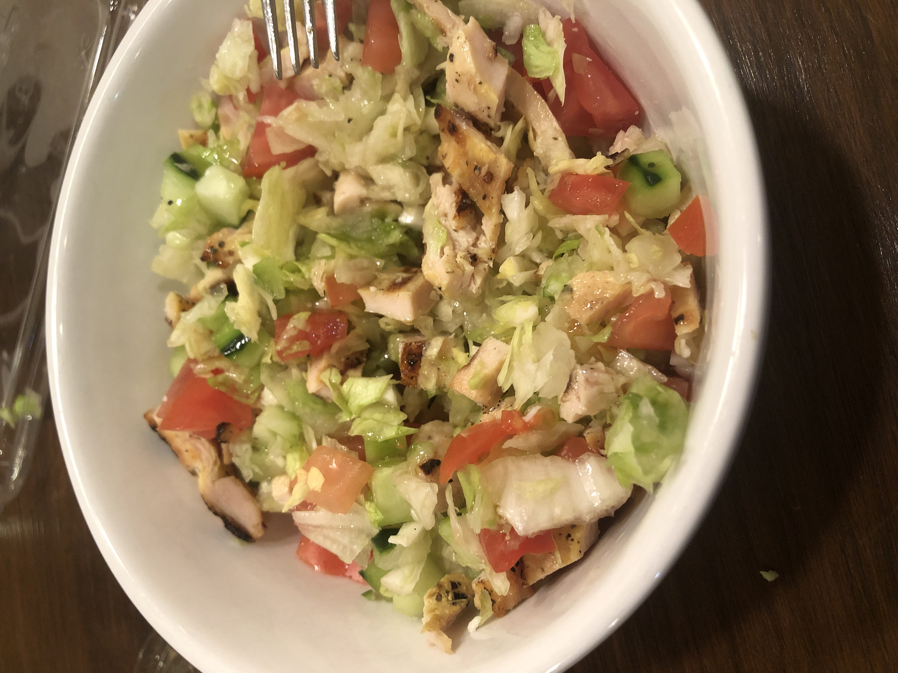
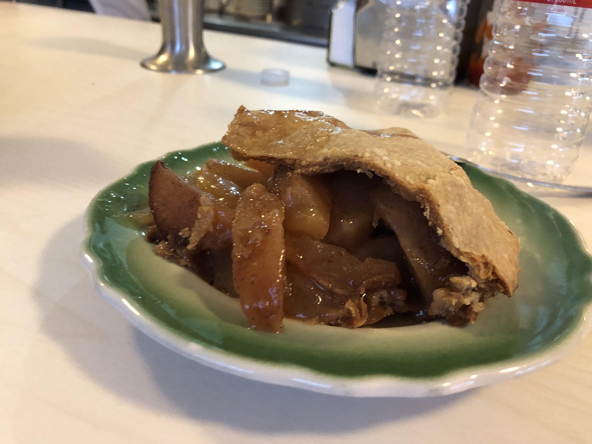

My first favorite restaurant would have to be a place called Hibou in Paris. This small Italian restaurant is about 10 minutes from my family's place in Paris. At this restaurant I typically get chicken, pasta, or pizza. For dessert, there is an amazing crepe stand right across the street. This little restaurant is my absolute favorite and I hope to enjoy it again soon.

My second favorite restaurant would have to be La Scala. This is a restaurant close to my home in LA and serves traditional Italian food. This is actually the only salad I will eat and it is very yummy.

My third favorite restaurant is called Apple Pan. I have been there since I was little. It was one of the first places my parents went together in high school so this place is definitely close to my family. They are famous for their burgers and apple pie.
